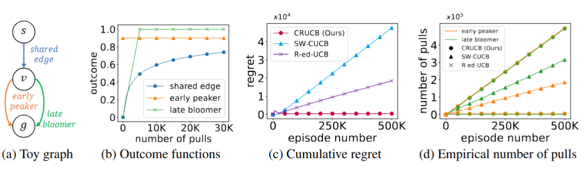
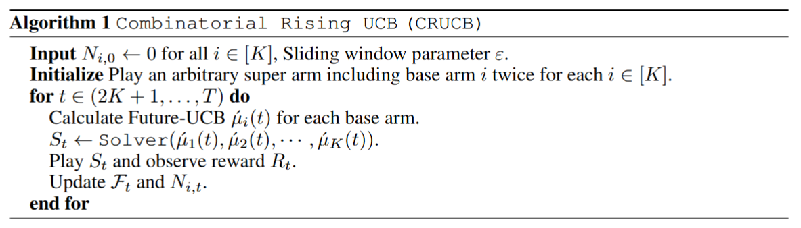

Combinatorial online learning is a fundamental task for selecting the optimal action (or super arm) as a combination of base arms in sequential interactions with systems providing stochastic rewards. It is applicable to diverse domains such as robotics, social advertising, network routing, and recommendation systems. In many real-world scenarios, we often encounter rising rewards, where playing a base arm not only provides an instantaneous reward but also contributes to the enhancement of future rewards, e.g., robots improving through practice and social influence strengthening in the history of successful recommendations. Crucially, these enhancements may propagate to multiple super arms that share the same base arms, introducing dependencies beyond the scope of existing bandit models. To address this gap, we introduce the Combinatorial Rising Bandit (CRB) framework and propose a provably efficient and empirically effective algorithm, Combinatorial Rising Upper Confidence Bound (CRUCB). We empirically demonstrate the effectiveness of CRUCB in realistic deep reinforcement learning environments and synthetic settings, while our theoretical analysis establishes tight regret bounds. Together, they underscore the practical impact and theoretical rigor of our approach.

Figure 1: An illustrative example for partially shared enhancement Crucially, every route incorporates the shared edge, which triggers partially shared enhancement across the system. This structural dependency leads to coupled reward dynamics that existing frameworks fail to solve, whereas our algorithm (CRUCB) successfully minimizes regret and converges to the optimal long-term strategy.
The Combinatorial Rising Bandit (CRB) framework formalizes online decision-making in environments where selecting a combination of actions (super arm), which not only yields an immediate reward but also enhances the future expected outcomes of its constituent base arms. The fundamental and unique challenge of CRB is partially shared enhancement : as illustrated by the "shared edge" in Figure 1a, multiple super arms often share common base arms, meaning improvements gained from one choice naturally propagate to others. Existing frameworks are unable to solve this partially shared enhancement, as traditional combinatorial bandits overlook the rising reward nature, while previous rising bandit models fail to account for the structural dependencies created by overlapping actions. Our method, CRUCB, effectively navigates these coupled dynamics to minimize regret and successfully converge on the optimal path, while baseline algorithms fail to account for the rising nature of the shared components (Figure 1c-d).

The Future-UCB index for each base arm \(i\) is defined as:
(i) Recent Average
Captures the current performance level using a sliding window.
(ii) Predicted Improvement
Estimates the growth slope and extrapolates future gains.
(iii) Exploration Bonus
Accounts for the uncertainty inherent in rising reward dynamics.
Let \(\pi_{\epsilon}\) be the CRUCB policy with an adaptive sliding window parameter \(\epsilon \in (0, 1/2)\). Under Assumptions 1 and 2, for a non-increasing function \(f\) such that \(\gamma_i(n) \le f(n)\) for each base arm \(i\), the cumulative regret of CRUCB is bounded by:
The upper bound consists of two primary components:
To analyze instances that allow for efficient learning, we define a fine-grained class of CRB instances \(\mathcal{A}_c\) for an arbitrary constant \(1 < c < 2\) as:
For any policy acting on this class \(\mathcal{A}_c\), the worst-case regret is bounded by:
This result serves as a structural separator between "easy" and "inherently difficult" instances. A larger \(c\) leads to slower outcome growth and a corresponding reduction in the regret lower bound. Crucially, as shown in Figure 3, the gap between our upper and lower bounds is minimal, establishing the theoretical tightness of our CRB framework.
@inproceedings{song2026combinatorial,
title={Combinatorial Rising Bandits},
author={Song, Seockbean and Yoon, Youngsik and Wang, Siwei and Chen, Wei and Ok, Jungseul},
booktitle={International Conference on Learning Representations},
year={2026}
}